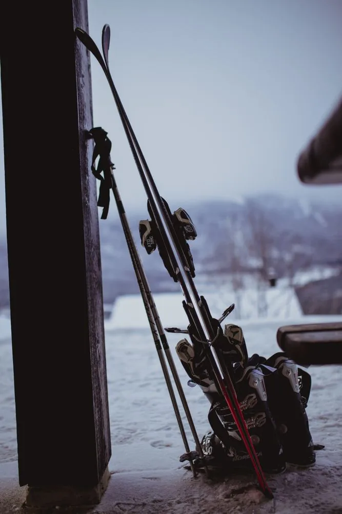
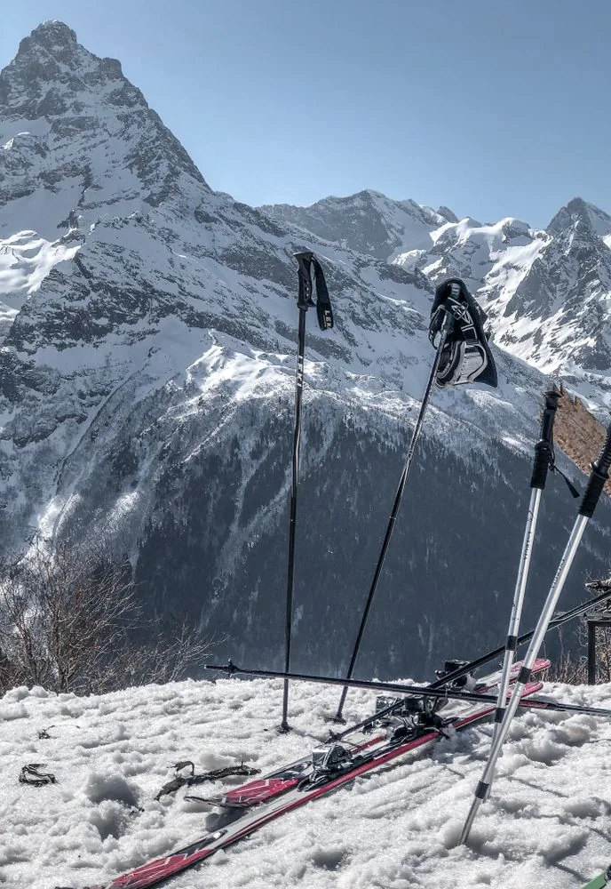
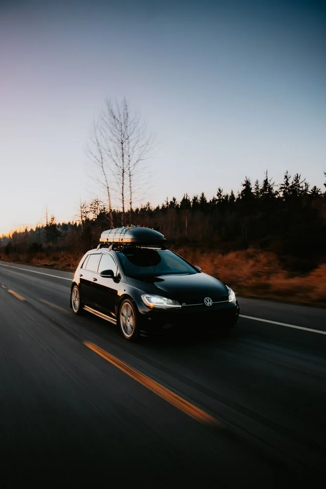

Compleet op reis
Complete skiset
Ski’s, skischoenen en stokken als complete set. We stemmen lengte, schoenmaat en niveau af voor een comfortabele start op de piste.
Per dag€ 15Weekend€ 35Per week€ 69
Reserveer complete skiset →Huur je ski’s, schoenen, stokken of dakkoffer al in Nederland. Zo vertrek je met passend materiaal, sla je de drukke verhuurbalie op je bestemming over en houd je meer tijd over voor de piste.
Reserveer op tijd, dan zetten we het materiaal passend en gebruiksklaar voor je klaar.

Ski’s, skischoenen en stokken als complete set. We stemmen lengte, schoenmaat en niveau af voor een comfortabele start op de piste.

Ideaal als je al eigen skischoenen hebt. Je krijgt passende ski’s met stokken, afgestemd op je lengte en skiniveau.

Neem ski’s en bagage comfortabel mee. We controleren vooraf of de daksteunen geschikt zijn voor jouw auto.
Een weekend loopt van vrijdag tot en met zondag. Een week is maximaal zeven aaneengesloten dagen. Verhuur zolang de voorraad strekt.